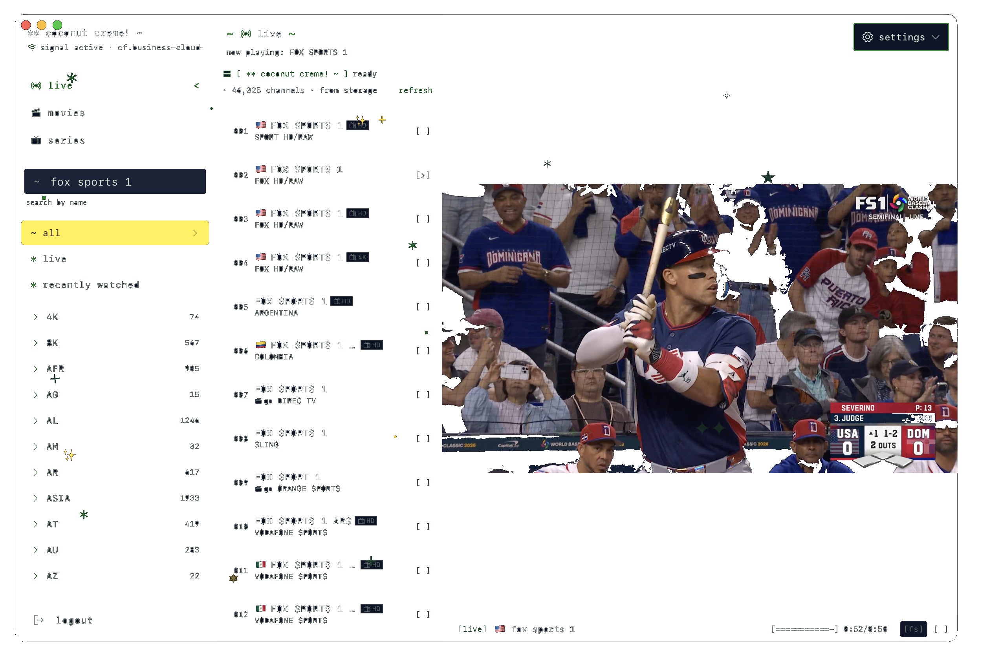

coconut creme is a player — it doesn't come with any content. to use it you need a subscription from an IPTV provider that supports the Xtream Codes API or M3U playlists.
your provider will give you a server URL, username, and password. enter those on the login screen and you're in.
search for "xtream codes IPTV" to find providers — most offer a 24–72 hour trial before you commit.